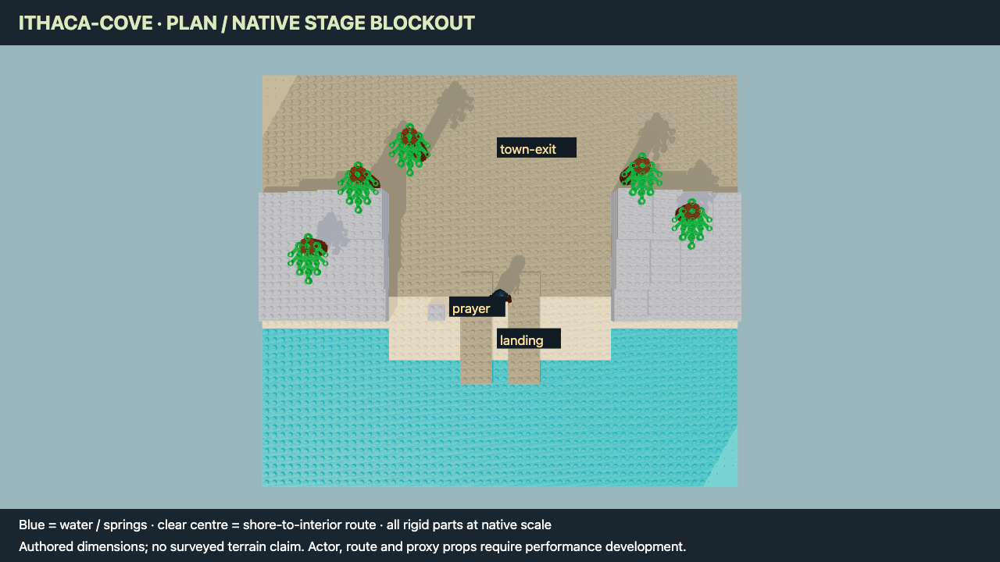
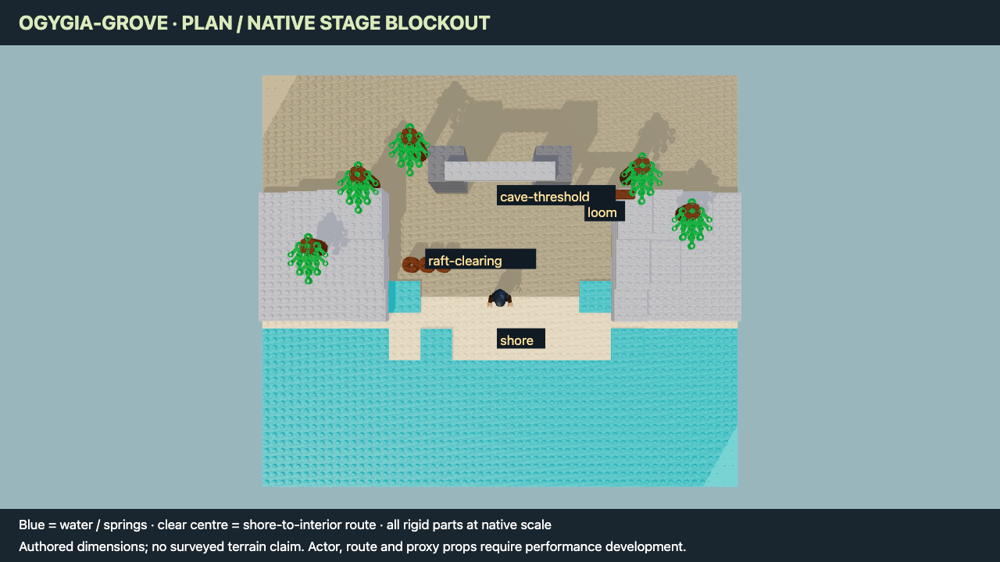

Superseded environment direction: Odyssey mode in Word to World — real-place scouting and imported donor geometry
68 source locations inventoried · 2 native blockouts · 825 part instances · 6 native views + 2 source cards.
Open location laboratory · Read source and donor map · 68-location ledger · Hero-item forage
Skinos informs the pebble / clear-water boundary. The actual stage dimensions are authored. No terrain survey or donor MOC import is claimed.


Native MPD
Native MPDBoth central routes clear 63 sampled upright actor boxes against tested obstacle boxes. No missing native dependencies. This does not certify animation, support, connections or foliage clearance. Floating upper foliage from the first pass was removed and the remaining layer moved to the actual trunk height.
21318 Tree House: removable canopy and landscape assemblies. Arcadian Hut: a 21318 alternate, file access still unverified. 21343 Viking Village: connected landscape sections, bridge/cave and removable interiors. Greek Warship MOC-45744 remains an unverified file lead.
Real-place sources: Municipality of Ithaca / Skinos · GNTO coast guide. Donor evidence and remaining requirements are recorded in the linked report.